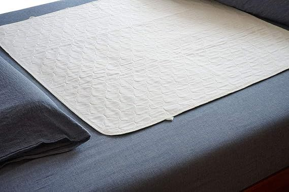

Märkte · Nordamerika
Nordamerika: Amazon bestimmt das Regal
In den USA sind waschbare Unterlagen eine reife Amazon-Kategorie mit vielen Bewertungen. Einige große Marken führen, doch Käufer belohnen weiterhin gute Qualität, sinnvolle Packgrößen und ehrliche Angaben.

41141Produkte im Wettbewerb um „washable underpads“ bei Amazon USASINsight, Juli 2026
$26.45Durchschnittspreis der Top-10-ListingsASINsight
50.4%Klickanteil der Top-3-ListingsASINsight
+100%Wachstum zum Vormonat beim 34×52-in-4er-Pack (Utopia Bedding)ASINsight
Geschätzter Monatsabsatz, waschbare Listings in den Top 10
ASINsight Amazon US, Juli 2026 (gerundete Schätzungen).
Kundenbewertungen (Tausend)
ASINsight Amazon US, Juli 2026.
Preisstufen, Suche „washable underpads“
Anteil der gelisteten Produkte nach Preis, ASINsight (Juli 2026).
Referenzmarke: Größenstaffel
| Größe · Pack | Preis | Bewertungen |
|---|---|---|
| 18×24 in · 3 | $22.99 | 121 |
| 34×36 in · 2 | $32.99 | 543 |
| 34×52 in · 2 Marine | $39.99 | 133 |
| 34×60 in · 2 Marine | $45.99 | 543 |
| 36×60 in · 2 | $44.99 | 543 |
Amazon.com-Listing, ★4,5, OEKO-TEX®-Standard-100-Siegel; abgerufen Nov. 2026.
Was das bedeutet
Erkenntnisse für eine neue Marke
- Das Volumen liegt bei 34×36-in-4er-Packs für 20–25 $. Dort über den Preis konkurrieren – oder ins Premiumsegment gehen.
- Größere Formate (34×52 und 36×60 in) wachsen am schnellsten und sind weniger umkämpft.
- Waschbare Unterlagen erscheinen bereits auf derselben Ergebnisseite wie Einwegunterlagen – das Argument „Kosten pro Nacht“ wirkt direkt.
- Ein Premiumsegment (30–45 $ pro 2er-Pack) funktioniert, wenn das Listing Zertifikate, Laschen oder Antirutsch und eine klare Aufbaugrafik zeigt.
- Walmart, Target und Medizinbedarf-Shops (Carewell, HME-Händler) sind sinnvolle Zweitkanäle.
 48
48Quellen
- ASINsight – Amazon-US-Bericht „washable underpads“ (Juli 2026)
- The Business Research Company – Marktbericht Mehrweg-Unterlagen
- Persistence Market Research – Markt für Mehrweg-Inkontinenzprodukte
- Fortune Business Insights – Markt für Einwegunterlagen
- Fortune – Japan: Erwachsenen- vs. Babywindeln (2024)
- IMARC – Markt für Erwachsenenwindeln in Japan
- my-best – Ranking 介護用防水シーツ (2026)
- testbedarf.de — Inkontinenzauflage Vergleich 2026
- TRSA – Faktenblatt Mehrweg-Unterlagen
- Amazon.com-Produktseiten (Utopia Bedding, IMPROVIA), abgerufen im Nov. 2026
Marktforschungszahlen unterscheiden sich nach Abgrenzung und Methode. Betrachten Sie sie als Richtwerte und prüfen Sie sie vor Investitionsentscheidungen.
Bereit für Ihre eigene Linie waschbarer Unterlagen?
Nennen Sie uns Markt, Größen und Mengen. Innerhalb eines Werktags erhalten Sie Datenblatt und Staffelpreise.